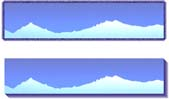
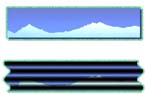

|
| ||
|
| ||
Nadja Vol Ochs
Design Consultant
Microsoft Corporation
September 16, 1997
Updated September 25, 1997
Previously published in the Site Builder Magazine (now known as MSDN Online Voices) "Site Lights" column, this article will give you four of the most popular Dynamic HTML techniques to add to your bag of design tricks and techniques for designing Internet Explorer 4.0 channels and sites. Internet Explorer 4.0 opens the doors to several creative techniques that will help maintain lightweight, speedy, and stunning experiences. Watch for these special effects in most new channels. Note that this article focuses on Internet Explorer 4.0 innovation, and not all samples will work in other browsers. To make most all of the information accessible to all readers, I have included visual representations, some source code, and reference information on this page, plus links to samples specifically designed for Internet Explorer 4.0. Enjoy and learn.
- NadjaShadow, blur, wave, glow, and alpha transparency are just a handful of the effects you can now add to any HTML element in a channel or Internet Explorer 4.0 Web site.
(If the preceding sentence only looks like plain text with a few bold words, you need to view it in Internet Explorer 4.0  , which you can download now
, which you can download now  .)
.)
These and several other effects are implemented via Cascading Style Sheets (CSS). Just as you can set the color and/or background color of HTML elements by using CSS, you can now change the visual appearance of the element.
For example, it is easy to add a shadow to HTML text or to add a glow to an image.
|
 |
See the Internet Explorer 4.0 HTML CSS version of glows and shadows.
The filter attribute, a CSS attribute, is necessary for adding visual effects to HTML elements. To add the glow to the image above, all I had to do was add the following CSS class to the STYLE block at the top of the page. Then I called the class from the image that I wanted the glow to affect. I was able to set the color and strength of the glow, and how far from the edge of the element the glow will appear.
.glow {position:relative;
top:0;
left:0;
width:100;
height:100;
filter:glow(color=#9933CC,strength=5)}
Chaining filters is another technique that creates very interesting visual effects. Chaining lets you apply up to eight different filters at a time to any given HTML element. Below are two graphics with chained filters applied.
|
 |
See the Internet Explorer 4.0 HTML CSS sample of chaining filters.
Here is an example of how to chain filters in CSS. Lists of filters are simply separated by a single space within the style block.
.CHAIN {position:relative;
top:0;
left:0;
width:100;
height:100;
filter:dropshadow(color=#483D8B,OffX=3,OffY=3,Positive=1)
glow(color=#9933CC,strength=5) }
If you are running Internet Explorer 4.0, you can view a page demonstrating all the possible filters.
Tip: Sometimes you may notice that your filter gets cut off around an image, especially when you use large-strength glows or blurs. Add height and width attributes to the element when adding a filter to give extra space around the edges for filters that go around the edge of the element, such as glows and blurs.
One graphic effect that Dynamic HTML offers is the dynamic scaling of images. For example, the Wired  channel takes full advantage of this effect. The channel uses very small images that scale to various sizes in a sequence. Scaling images or text is easy, and it is a stunning effect to add to channels, previews, or intro segments. The scale can happen instantaneously or dynamically over time. At either speed, the effect lets you reuse small files as textures, stretch images for interesting effects, or create animation effects.
channel takes full advantage of this effect. The channel uses very small images that scale to various sizes in a sequence. Scaling images or text is easy, and it is a stunning effect to add to channels, previews, or intro segments. The scale can happen instantaneously or dynamically over time. At either speed, the effect lets you reuse small files as textures, stretch images for interesting effects, or create animation effects.
Three easy steps:
Samples to view with Internet Explorer 4.0:
View a sample that scales from nothing to much larger.
View a sample that scales a small image to a larger size and moves along the x-axis simultaneously.
Tip: Be careful not to specify both width and height in the IMG tag, or the image will not retain aspect when scaling.
Images flying in from various sides of the screen at the speed of light? Not exactly that fast, but you can move any HTML element around on the screen, or from any off screen location, as in the example above. Dynamically moving elements across the screen real estate is a popular effect. It's easy to change coordinates and z-indexes via scripting.
If you are running Internet Explorer 4.0, you can view a sample that demonstrates dynamic movement of a fish swimming among some lightweight Direct Animation structured graphics.
Tip: If you are moving an image or element that has a filter applied to it, remove the filter temporarily and then re-apply the filter when the element has reached its final location. Elements move faster without filters applied to them. To make a long story short, the browser has less thinking to do while painting the element to the screen as it moves around.
Want to hide and show images? Every HTML element has a visibility property. Simply add the visibility attribute for any element to your style sheet, and set it to visible or hidden. Now you can have images hidden on or off screen that are not painted until you tell them to via script.
img src="myimage.gif" style="visibility:hidden"
or
img src="myimage.gif" style="visibility:visible"
The fish sample I mentioned above also illustrates hiding images. One animated GIF of a fish is visible and being moved across the screen, while an animated GIF of the fish swimming in the other direction is hidden. When the fish starts to swim in the other direction, the visibility is swapped on the images.
Technique: Try using scripting to toggle the visibility of the image, and combine this with scaling to achieve the same effect as an animated GIF.
Nadja Vol Ochs is the design consultant in Microsoft's Developer Relations Group.
Be smart about any of these effects, especially adding moving elements and filters.
Don't just do it because you can.
Don't bite off more than your browser or your users can chew.
Be sure your effects work with your design -- not against the navigation, speed, or functionality.
If you have to wait a long time or click several times to reach another location, think twice about your effects.
Used in moderation, these effects can provide a unique user experience.
The best place to start is to brush up on the basics of Cascading Style Sheets  -- supported by Internet Explorer 4.0
-- supported by Internet Explorer 4.0  and other browsers. A great CSS reference is the Web Design Group
and other browsers. A great CSS reference is the Web Design Group  site.
site.
The Worldwide Web Consortium (W3C)  is currently considering a proposal to include support for CSS filters in the next version of Cascading Style Sheets.
is currently considering a proposal to include support for CSS filters in the next version of Cascading Style Sheets.
Did you find this material useful? Gripes? Compliments? Suggestions for other articles? Write us!
© 1999 Microsoft Corporation. All rights reserved. Terms of use.